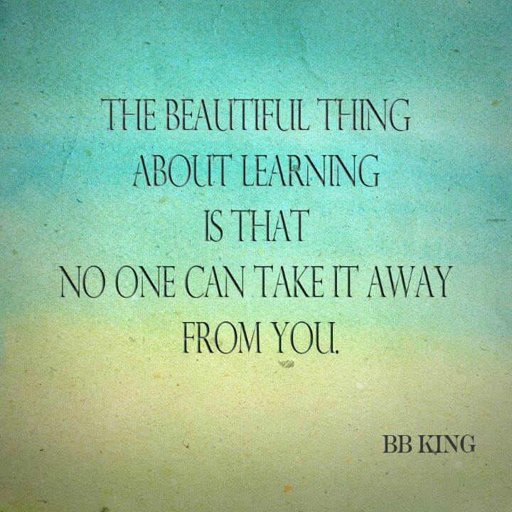

| Home | Leadership | Teaching and Learning | Instructional Design | Multimedia Development | Professional Development | Resume |
|---|
|  | C-2: Technology Coaches assist teachers in using technology effectively for assessing student learning, differentiating instruction, and providing rigorous, relevant, and engaging learning experiences for all students. |
|---|
| Course Artifacts | Field Experience Artifacts |
|---|---|
|
My first Wiki website which was developed to reflect on my own teaching and learning in the beginning of my instructional technology journey. The reflections shown include various topics such as my personal use of technology in the classroom, ethics regarding technology in the classroom, and the impact of technology on learning. Due to "WikiSpaces" closing their website, I have since transferred the information to pbworks.com which is the link above. (Course: Introduction to Instructional Technology) |
I use Google Forms for a variety of things in my classroom. We use them for a variety of assessments, such as vocabulary or comprehension, however, we also use them for an easy voting tool for the students. For example, the Fifth Grade class won a movie reward from the principal one day, so we quickly made a Google Form for all the classes to vote on so that we could find out what the most popular choice was. The above link leads you to an example assessment that the students complete for a comprehension check. |
Integrating Project & Paper (Link to be updated at course completion May 2019) The project being implemented here is a cross-curricular project that will involve art and language arts. We plan to complete this with 5th grade students. They will complete a graffiti unit that will cover the rise of graffiti art in NYC in the 1970's and 80's. Students will consider their feeling on whether graffiti is art or vandalism. They are able to utilize their creativity by creating their own name design on a special website. Then, they will use what they learned about graffiti in language arts. They will complete a unit that challenges them to think about the uses of graffiti and their opinion on whether it should be considered vandalism or art. The final assessment is through a written opinion essay for a language arts grade. (Course: Integrating and Implementing Technology) |
This video was created using ScreenCastify with our instructional coach. This video demonstrates how to gather data from another digital resource that I use in my classroom. The students use this as their "warm up" at the beginning of class so that I can gain data daily on their progress with each skill. |
The above link is the written lesson plan for the project desribed above. (Course: Integrating and Implementing Technology) |
|
For my Online Learning Environment, I decided to begin with our graffiti opinion unit. This is a collaborative plan with our art teacher. He does a graffiti unit with our fifth graders where they discuss what graffiti is and the students are able to create a graffiti design using their name. We will collaborate this with our writing standards on opinion writing. By the end of the unit, the students will be expected to write an opinion piece regarding their thoughts on graffiti and is it art or vandalism. The above link takes you directly to what the students would complete. (Course: Strategies for Online Teaching and Online Learning) |
|
For my Online Learning Environment, I decided to begin with our graffiti opinion unit. This is a collaborative plan with our art teacher. He does a graffiti unit with our fifth graders where they discuss what graffiti is and the students are able to create a graffiti design using their name. We will collaborate this with our writing standards on opinion writing. By the end of the unit, the students will be expected to write an opinion piece regarding their thoughts on graffiti and is it art or vandalism. The above link takes you to the paper that outlines the teacher plans and rationale for the lesson. (Course: Strategies for Online Teaching and Online Learning) |
| Home | Leadership | Teaching and Learning | Instructional Design | Multimedia Development | Professional Development | Resume |
|---|
|
|
| Last Revised: March 2019 - ©Elizabeth Rinkes |